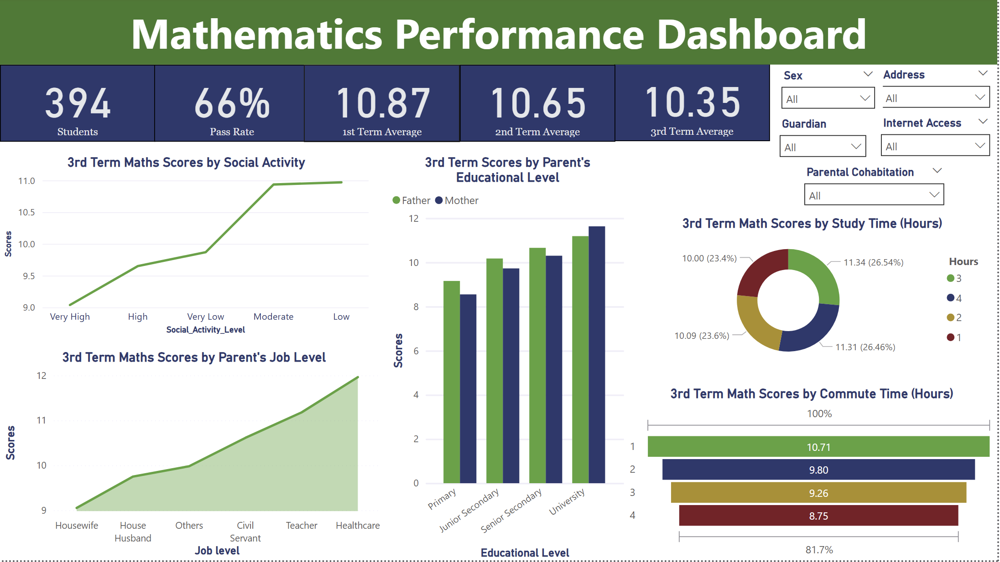

A data‑driven look at Q1 performance across 459 public companies, highlighting market capitalization, sales distribution by cap‑tier, and standout industries driving value and growth.
Industry: Education
Project Background: This analysis examines the academic performance of 394 secondary school students to uncover patterns linked to socio-economic and behavioral factors. By analyzing trends across parental background, study habits, social activity, and access to resources, the project aims to understand what drives success in mathematics and highlight areas where educational support can be improved.
My Task As A Data Analyst: Analyze academic data to uncover key performance drivers, compare trends across socio-economic groups, and create actionable visualizations to support educational strategy and policy recommendations.
Skills: Data wrangling,Trend analysis,Data Exploration,ETL,Advanced DAX functions,Problem Solving,Data Visualisation, Story telling.
Tools/Libraries: Sheets, Power Bi.
Insights: While study time clearly correlates with better performance, the analysis reveals that environmental and socioeconomic factors—like commute time, parental education,social activity, alcohol consumption and internet access—are just as influential.
Students with university-educated parents, especially mothers, and those from families in teaching or healthcare professions consistently outperformed peers. Similarly, those who had shorter commutes and access to the internet had better outcomes. This shows that even with equal study effort, students from better-supported home environments have a significant advantage, highlighting a gap in educational equity.
Analysis:
Student Success Analysis: A Study in Mathematics
An extensive survey was conducted at a secondary school with 394 students, aimed at uncovering the behavioral and socio-environmental factors that contribute to student success in mathematics. The study spanned three academic terms, tracking student performance while capturing key personal, familial, and social variables. The result was a robust dataset—rich with insights that go beyond mere grades.
Key Findings:
The decline suggests a gradual drop in performance over time, possibly due to curriculum difficulty, declining engagement, or environmental stressors. But the deeper story emerges when we dig into the why behind these numbers.
Social Behavior: The Quiet Performers Rise
One of the clearest behavioral findings came from students’ social activity levels. Contrary to the assumption that high social engagement fosters well-rounded excellence, the best academic performers were those with low to moderate social activity. Students in these categories outperformed both their extremely outgoing and extremely withdrawn peers. It points to a balance—children who are socially active enough to interact and grow, but not so involved that it distracts from their academics.
Parental Influence: Job Roles and Education Matter
Another striking pattern emerged from parental occupations. Students whose parents work in healthcare and teaching scored the highest in 3rd term math tests. These professions often emphasize discipline, structure, and continuous learning—traits that may trickle down into the home environment. Additionally, the educational level of parents proved to be a strong predictor of student success. Students with university-educated parents, especially mothers, consistently achieved the highest scores. This reinforces the influence of a literate home environment where education is prioritized and supported.
The Role of Time: Studying and Traveling
Time, unsurprisingly, plays a pivotal role in performance. Students who dedicated 3–4 hours daily to studying were clearly ahead of the curve. Anything less than two hours of study time resulted in a notable drop in scores, emphasizing the value of consistent, focused learning outside the classroom. Conversely, commute time told a cautionary tale. Students with long daily journeys—especially over 3 hours—saw their math scores decline steeply. A 4-hour commute correlated with the lowest performance (average score: 8.75), showing how physical exhaustion and lost study time can impact learning outcomes.
Rural Disadvantage: Filters Reveal an Unequal Playing Field
Using filters built into the dashboard, a clearer picture of demographic inequalities emerged. A significant portion of students came from rural areas and lacked internet access at home. This digital divide not only limited their ability to study effectively but also contributed directly to higher failure rates among this group. When modern learning increasingly relies on online tools, the absence of such infrastructure becomes a silent barrier.
Conclusion: The Bigger Picture of Student Performance
This analysis showed—using mathematics as a case study—that performance in academics is influenced by more than just how much a student studies. I looked deeper into how factors like parents' jobs and education, commute time, internet access, and social habits affect student outcomes. These elements all work together to shape academic success. The data told a bigger story—one about support, opportunity, and the challenges some students face. It helped me see where changes can be made to support better learning for everyone.